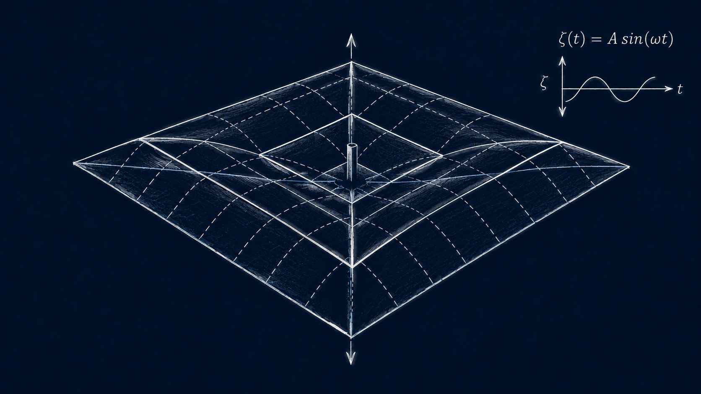

Research Direction
Vibrations of Deployable Structures
Exploiting the effects of vibration on deployable structures

We study how vibration interacts with the geometry of origami and deployable structures, and how these dynamics can be exploited rather than suppressed. In particular, we explore underactuated control strategies in which selected vibration modes are excited to generate useful motion, enabling complex structural movement using only a single actuator.